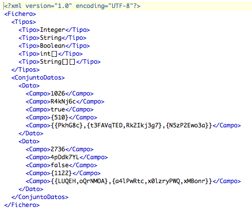
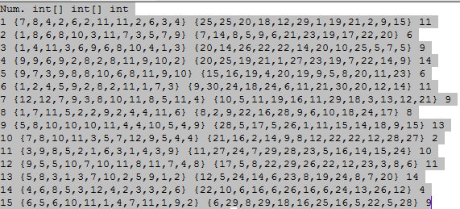
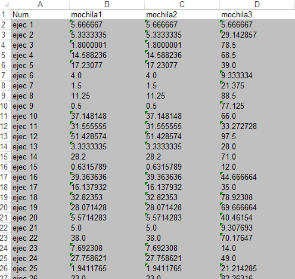
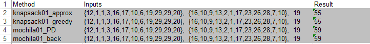
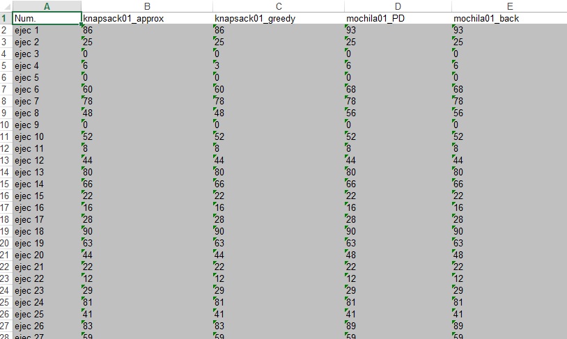

return
Format files
Input data file
To load data from a file, you must create an XML file, with content similar to this:

The file has the following format, main label <Fichero>, within a label
<Tipos> where are the types of the fields of each data, and many labels <Tipo>
as having the data types. Here, we present a label <ConjuntoDatos>,
within which are the data between <Dato> tags, with each field enclosed in
<Campo>.
You can also load data from a TXT file with a content like this:

The file has the following format, a line in which the types of the fields in each data indicated,
and as many lines as desired datasets.
Historical table file
The Historical table file looks similar to this:

In the example you see the results of three methods the maximum gray coloring.
The information provided by the table is the following:
- Run number:
Run number.
- Outturn for each method:
The name of the column is the method, and the results are presented cells.
Results table file
The Result table file looks similar to this:

In the example are the results of an execution of three methods.
The information provided is the following table:
- Methods:
Name of each method.
- Input data:
Input data for which the results were obtained.
- Output Data:
Result of execution of each method for the given data.
Summary table file
The Summary table file looks similar to this:

In the example you see the comparative results of the implementation of three methods.
The information provided is the following table:
- Total executions:
Number of executions.
- Percentage of suboptimal results of each method:
Percentage of executions in which each method has suboptimal results.
- Percentage of optimal results for each method:
Percentage of executions in which each method has given optimal results.
- Percentage superoptimal results of each method:
Percentage of executions in which each method has superoptimal results.
- Percentage of average deviation of each method:
Mean percentage deviation of the no optimal results for each method.
- Percent maximum deviation superoptimal of each method:
Percent maximum deviation of the results superoptimal of each method.
- Percentage maximum deviation suboptimal of each method:
Percentage of maximum deviation of the suboptimal results of each method.
File with all the tables
Excel file with all the tables in different tabs:
September 16, 2016